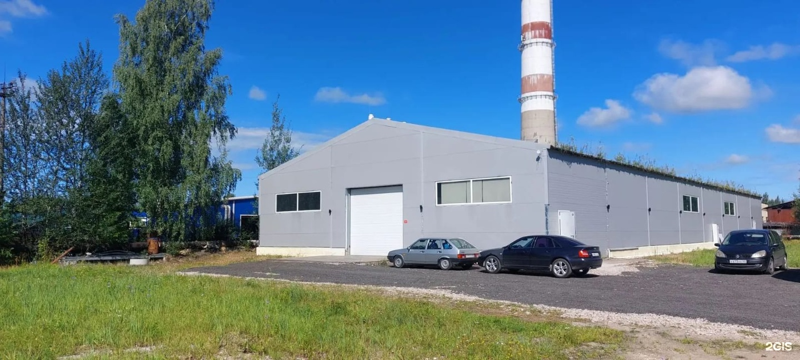
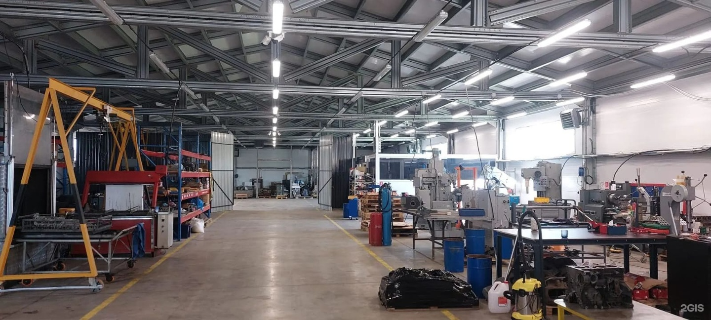
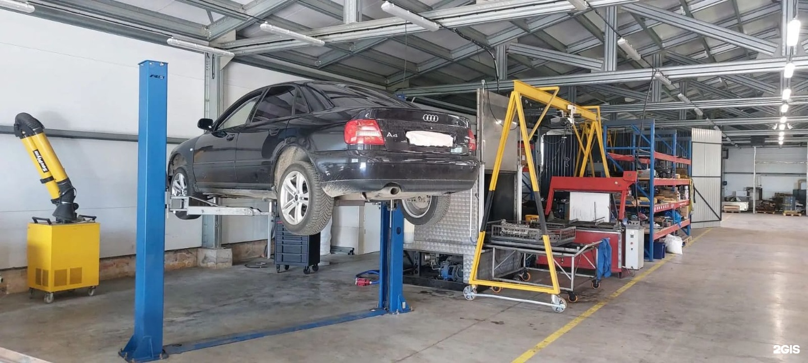
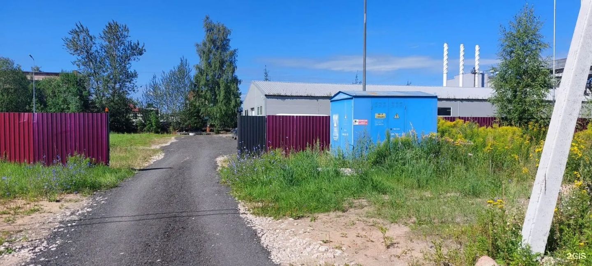

Демо-концепт · текущий прайс ещё не подтверждён
Что ремонтируем
Ремонт карданных валов
Ремонт бензиновых двигателей
Ремонт дизельных двигателей
Шлифовка
Расточка
Гильзовка
Опрессовка
Замена масла
Уточните работы по двигателю или кардану
ПозвонитьЧто отмечают клиенты
В одном отзыве отмечают вежливое общение и подробные объяснения выполненных работ.
Посетитель положительно описывает обработку блока двигателя и ремонт кардана.
Некоторые клиенты положительно оценивают скорость выполнения работ.
Пересказ мнений посетителей без имён авторов. Все отзывы в 2ГИС
Услуги и цены
Цех и оборудование




Как нас найти
Псков, Инженерная улица, 1к
Запсковье
Часы работы
- Пн–Пт 09:00–18:00
- Сб 10:00–16:00
Телефон
+7 (911) 375-24-24